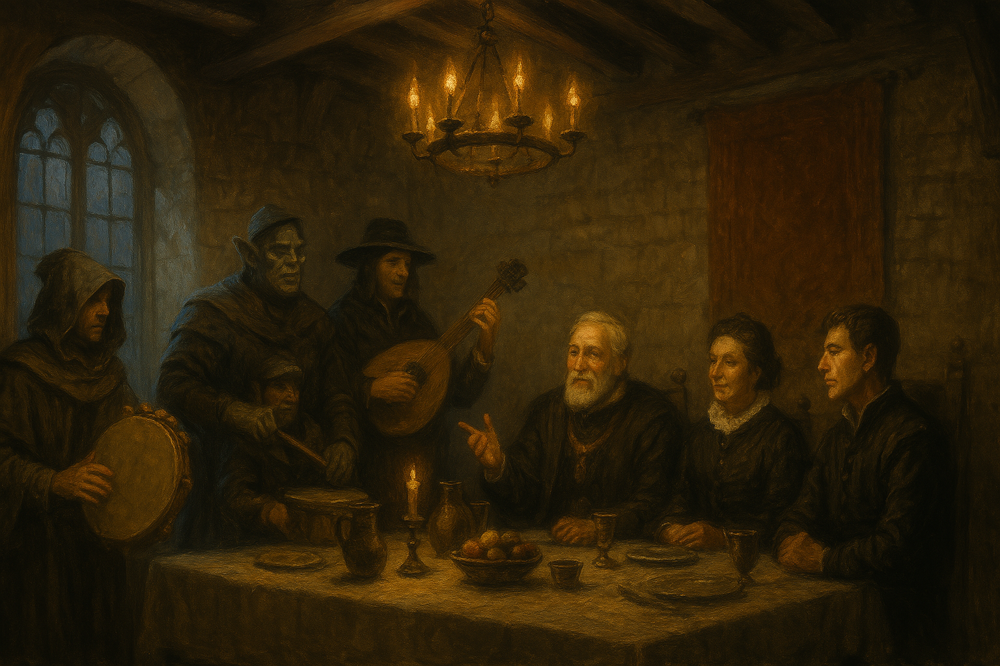

Chapter 2: Sun and Moon
The Blooming of Macksohn

The Blooming of Macksohn
15048.11.08
大家決定在 Sunrise 關門後回到店內和暫居於此的 Ron 討論後續規劃。
Samael 和 Paladin 使用了稍早在崔尼斯劇院遇到的經紀人給的名片，傳送到了一間辦公室。門上了鎖，且室內空無一人，也沒有光線。兩人從窗戶踏入了外頭。深夜，兩人完全不知道自己身在何處。最後，兩人決定在辦公室旁的小巷過夜，輪流守夜。Samael 在守夜時看見了這間辦公室的名字叫「Patton’s」。
Lemmy、Midori、YHWH 等人在 Sunrise 門口敲門卻沒有任何回應，因此 Lemmy 用了他的工具開鎖，進入了 Sunrise。正在鋪床的 Ron 聽到了外頭有聲響，小心翼翼地來到了門口，看見是他所熟識的三人才放下了戒心。四人討論著該如何探索 Kahn 曾說過自己的住處，Sunrise 的二樓，從 Sunrise 內找到了一把梯子，最後卻決定先放棄往天花板鑿洞的計畫。
而後，Ron 和 Lemmy 起了爭執。Lemmy 各種鬼祟的行徑讓 Ron 起了疑心，兩人大打出手，連 YHWH 和 Midori 也加入戰局，最終三人成功擊暈了 Lemmy。商討著該把 Lemmy 留在店內，還是帶回 Gates Inn，最終 Ron 被說服了，將 Lemmy 五花大綁後壓在桌上。此時已過凌晨三點，而 Midori 和 YWHW 回到 Gates Inn 時也四點鐘了，兩人便呼呼大睡。
輪班守夜的 Paladin 也不好過。他看見了一個從遠處接近的斗篷人，令他起疑。小心躲在巷內的他，卻不知怎的還是被斗篷人發現了，露出了他發出紅光的雙眼，而 Paladin 也跌到了地上。然後斗篷人就消失了。
天亮了，還在守夜的 Paladin 看見了經過的人群交頭接耳，不久後，兩個衛兵走進了巷子內，走向熟睡的 Samael。情急之下，Paladin 將晚上撿拾到的石頭（其中一顆石頭被他稱為鯊魚 Shark）砸向一旁的窗子。奇異的角度，讓破碎的玻璃刺上了其中一位衛兵的後腦勺。另一位衛兵趕緊回頭尋找「犯人」。此時已清醒的 Samael 釋出善意，為這名受傷的衛兵治療。兩人寒暄著，直到衛兵離開。然而，就在衛兵離開，經過 Paladin 時，Paladin 叫喊了一聲 Samael 的名字，引起了衛兵的注意。Paladin 表示衛兵聽錯了，他叫的是 Samuel，全名 Samuel Jackson。在雙方陷入僵持之時，一名正裝的男子輕鬆寫意的走了過來，輕鬆得打發了衛兵。他伸出手，和兩人致意，表示自己就是兩位昨日遇見的經紀人，自稱 Mr. Moon，並表示以後遇到衛兵這種小事情，只要表示自己是 Mr. Moon 的客戶，就不會有問題了。
Mr. Moon 帶著兩人回到了辦公室內，累壞了的 Paladin 在椅子上打起瞌睡，甚至連 Samael 的表演也叫不醒他。Mr. Moon 感到滿意，表示應該帶自稱為「Dakson」的 Samael 見見他的客戶，Berners 家族。兩人敲定隔天中午來辦公室找 Mr. Moon。Mr. Moon 也表示歡迎 Dakson 帶他的樂團（Samael 表示他們是「Dakson 與他的快樂夥伴」，Paladin 的名稱則是 Mercedes）一起來。在 Mr. Moon 向兩人指引了回到 Sunrise 的路線後兩人便離開了。
熟睡的 Ron 和 Lemmy 在 Sunrise 老闆的呼喚聲中醒了過來。老闆十分自責讓 Ron 守店卻遇上了惡徒，表示自己願意出錢，讓 Ron 在外面找個旅店繼續住。Ron 背著 Lemmy 走出店外。假寐的 Lemmy 在睡眠不足的 Ron 背上作亂，搞得 Ron 摔倒在地上。一群好心人士圍了過來幫忙。Ron 向大家詢問怎麼前往 Gates Inn，卻發現這些人都不知道這個旅店。後來他才突然發現 Gates Inn 是個窮旅店，這些高社經地位的人們自然不會知道。一位路人找了路邊一位流浪漢，給了一枚金幣，便讓流浪漢領著 Ron 去找 Gates Inn。
流浪漢幫忙 Ron 背起 Lemmy，卻在 Lemmy 的躁動下也跌倒了。Lemmy 和 Ron 起了爭執，Ron 叫喊著 Lemmy 是竊賊，Lemmy 則叫著 Ron 是「沃瓦倫的惡魔」，周圍的群眾面面相覷，直到衛兵來了，而 Lemmy 秀出了手上的太陽徽記，鬧劇才告了一段落。衛兵警告 Ron 別惹事，因為他不知道自己惹上的是什麼。看戲的群眾們也一哄而散。
落魄的 Ron 帶著流浪漢回到了 Sunrise 用餐，還點了些酒，詢問了關於太陽神教與崔尼斯劇院的事。流浪漢表示自己沒去看過崔尼斯劇院的任何劇，央求著 Ron 請他看，最後被 Ron 打發走了。中間疲憊的 Samael 和 Paladin 也在 Sunrise 用完了餐，但大家都太疲累了，Samael 和 Paladin 與 Ron 都沒看見彼此，擦肩而過。而後，Ron 找了附近一家稱為 White Brick 的旅店住了下來。
帶走 Lemmy 的衛兵把 Lemmy 拉到了巷子內，向 Lemmy 教訓了一番，要他做事小心點，也告訴他下一次組織不會這麼輕易放過他了。接著，他在 Lemmy 沒有刻太陽徽記的手上，用匕首硬生生畫了一個粗糙的太陽徽記作為警告，接著便離去了。
中午睡醒後，Samael 和 Paladin 在 Gates Inn 房間外會面，並來到 YHWH 和 Midori 分別的房間。大家討論著昨晚與今早分別的狀況，一致認為現在他們所見到的 Lemmy 肯定有問題，於是請 Midori 試著和 Gates Inn 的櫃台 Kevin 遊說，希望能請他幫忙打開 Lemmy 住的房間，進去搜索一下。經過 Midori 的努力，似乎有很大的誤會的 Kevin 拿了鑰匙，打開了 Lemmy 的房間，卻一無所獲，空蕩蕩的。大家離開 Lemmy 的房間回到大廳後，決定先離開 Gates Inn，去一趟 Sunrise。而在離開 Gates Inn 前，Kevin 也告訴他們聽說今天日落前在王宮花園有一場比武大會的說明會，可以去參加看看。
在 White Brick 睡醒的 Ron 因為休假，來到了崔尼斯劇院，看了伙伴們提及的「崔尼斯簡史」劇場。看完後便慢慢前往今早老闆曾提到的王宮花園，據說今天日落前，會有一場比武大會的說明會。
在 Sunrise 簡單用餐後，Samael、Paladin、YHWH 和 Midori 討論著 Mr. Moon 邀請 Samael 帶著樂團一起去 Berners Family 表演的提議。眾人討論後，決定將團名改為「荒野旋律」（Rhythm of the Wild），Samael 的藝名為 Dakson，Paladin 是 Mercedes，YHWH 叫 Sha’Doom（從 Lemmy 那裡拿到的神秘杯子底下，似乎寫著這個名字，不過後來 YHWH 後悔，改名為「好大搖搖搖」），以及 Midori，藝名是 LeAmes JaBron, the Talent Taker。Paladin 要了兩個 Sunrise 的鐵杯，作為敲擊樂器，而 YHWH 和 Midori 則擔任和聲。在熱烈討論，且開始練團後，Sunrise 的店小二看了十分有興趣，掏光了自己身上的錢，作為贊助，希望能成為「荒野旋律」的神秘贊助人，而當然，他也沒有公佈自己的名字（雖然後來大家都知道他叫 Frankie）。時間接近傍晚，眾人便出發前往王宮花園了。
在王宮花園前的廣場前方有個市集十分熱鬧，眾人趁著比武大會說明會還沒開始前逛了一下。走散的 Samael 從眼角餘光似乎看見了一個身穿黑色斗篷的熟悉身影，令他感到不寒而慄，但不久便消失無蹤了。在市集外等待的 YHWH，則是看見了另一個熟悉的人影：被 Paladin 戲稱為 Cena 的 John，不過他的身邊似乎跟著一個女人。YWHW 試圖跟上他們的腳步並搭話，詢問這個女子的身份，Cena 決定不予理會，不過 YHWH 也聽到了這名女子的名字是 Beatrice。同時來到現場的 Ron 也目睹了這一幕，並和 YHWH 對此進行了簡單的討論。
不久後，響亮的鐘聲響起，眾人開始移動到王宮花園。Midori 決定先回 Sunrise 等待醫生今晚的約。花園的小舞台上，一名穿著正式的男子邀請了國王巴納沃二世來進行說明。國王表示本次的比武大會和過去相同，是一打一的單獨對戰，且最終獲勝者有豐厚的獎勵。同時，國王也邀請了本次比武大會的嘉賓之一：來自寇林菲爾德的佛列里爵士，向大家打招呼。說明會結束後，花園外便開始了報名的手續。Ron 花了點時間排到了隊伍前端，不過在登記名字時，因為也有其他同名為 Ron 的參賽者，想不到更特別稱號的 Ron 決定隔幾天再來報名。
Midori 借用了 Sunrise 的員工休息室，和醫生簡單談話。過程中，Midori 坦承了冒險者們「沃瓦倫的惡魔」的身份，但也說明了當天真實的狀況。醫生也透露了自己的名字為 David。Midori 從 David 醫生那裡打聽到了目前城內刺有十道光芒太陽刺青的團體，是自稱為「崔尼斯的聖騎士」的一群光之神信仰者，不過總覺得他們除了跟隨光之神外，似乎有別的意圖。另外，David 醫生也提醒 Midori 要小心 Berners 家族。最後 Midori 簡單讓 David 醫生和冒險者們認識後 David 醫生便離開休息室了。
冒險者們互相同步了這一天的狀況，大家也邀請 Ron 明天一起去 Mr. Moon 的事務所，一起去 Berners 家族那兒見見世面。Ron 答應負責當提行李的人，但表示自己不太能幫忙表演，深怕拖累大家。
時間漸晚，Ron 以外的人討論著是否該回 Gates Inn，但是一來認為 Lemmy 知道他們的住處，似乎有風險；二來據 Ron 的觀察，Gates Inn 似乎在城內是不太光鮮亮麗的地方，住在那裡有可能會被城內名流看不起，於是大家便決定入住 Ron 現在住的 White Brick。
在 Ron 協助老闆收拾餐廳的過程中，他與老闆聊了聊，談到參加比武大會的稱號這件事，老闆鼓勵 Ron 將自己的家鄉尖頂寺列入，為「來自尖頂寺的 Ron」，就足夠響亮了。
15048.11.09
日出不久，冒險者們就醒了。除了 Ron 外，大家都在 White Brick 大廳集合。等了好一陣子沒等到 Ron，大家便決定先前往 Sunrise 用餐。大家在用餐過程中也沒注意到來到餐廳準備上工，完全忘記今天要去見 Berners 家族的 Ron。在 Frankie 的同意下，大家便在 Sunrise 簡單練團，並決定了今天主要演奏的樂曲為 Midori 在津菈教學習的聖歌。
Ron 發現老闆今天似乎不在，和 Frankie 確認後認為這樣的情況有些問題。Ron 提議請 Frankie 告訴他老闆的家在哪裡，自己可以飛奔過去，卻被 Frankie 以他是龍人，怕嚇到老闆的家人為由拒絕，最後決定兩人先讓 Sunrise 暫停營業，一同去老闆家看看。
在 Sunrise 的門關上時，「荒野旋律」的成員們決定剛好出發去見 Mr. Moon。在 Mr. Moon 的事務所 Patton’s，他們簡單互相介紹後，見到了一位沒見過的半獸人，自稱為 Brock，行為舉止十分有禮的一名年輕男子。Mr. Moon 表示 Brock 也是他近期發掘的新人，希望能讓兩邊合作。Brock 表示自己是表演打擊樂的，拍了拍自己的肚子簡單表演，隨後表示自己在開玩笑，便拿出放在身後的兩面鼓。在大家簡單表演給 Brock 看後，Paladin 決定將他的兩個鐵杯「Shark 2.0」交給 YHWH，自己幫忙合聲。Brock 也表示自己大概知道該怎麼搭大家了。在幾次練習（YHWH 幾次撞壞 Shark 2.0、Shark 3.0、Shark 4.0，每一次都由自稱為修補匠的 Brock 完美修好）後，Mr. Moon 便帶大家出發了。然而，走到一半，Mr. Moon 才發現大家都沒有換裝，這樣去貴族家不太禮貌。回到 Patton’s，Mr. Moon 開了事務所的一個小房間，協助「荒野旋律」換上一套適合今天表演的服裝，一套以灰黑色為主要基調的服裝。
走到了山丘上，大家逐漸看到 Berners Family 的宅邸。Mr. Moon 熟門熟路的和門衛打招呼，順利進入了宅邸。經過好幾層厚重的雙開門後，眾人終於見到了在遠方三個座椅上的貴族，傳說中的 Berners 家族了。坐在中間的是一位鬍子灰白色的年長男性；男性右邊的是一名中老年的典雅女性；男性左邊的則是一名年輕男子，年齡大約剛成年。
經過 Mr. Moon 的簡單介紹後，眾人便開始表演，並得到了貴族們不錯的評價。接著，年長男子向各位招了招手，大家在 Mr. Moon 的指示下向前走，來到了距離貴族們不遠的位置便停了下來。男子向大家介紹，自己是 Jefferey Berners，一旁的是他的妻子 Ona，另一邊的則是自己的孫子 Lance。他明確地說道會來到這裡的，肯定是有所需求，便詢問荒野旋律的大家是否有什麼想要的東西。大家面面相覷，不太知道該怎麼搭話，於是 Jefferey 便邀請大家先進午餐。
餐桌上，由 Samael 帶頭，向 Berners 家族詢問了不少事，了解了崔尼斯教認為一切會發光的都具有神性，主要崇拜太陽、月亮，以及星星，Jefferey 也指到 Mr. Moon 所信仰的月之神芬尼爾教崇拜月亮，兩教之間互相包容，沒有衝突。另外，Ona 表示可以將他們介紹給麥克嵩的紫羅蘭認識，兩天後在這裡會有一場大型晚宴，紫羅蘭肯定會到現場。Lance 則好奇的問起冒險者們關於冒險的事，Midori 則將在地城遇到 Guu-Guu 以及 King Knicol 的故事說給 Lance 聽。期間，Brock 和 YHWH 提出了他對於崔尼斯教起疑的地方，也說這裡到處都能看到崔尼斯教的各種符號與常用的色調風格。
餐後，Lance 帶領大家參觀宅邸的宴會廳。在 YHWH 的好奇之下，Lance 去找了他的父母來與荒野旋律的各位認識。隨後，Lance 的母親 Selene 來到現場，表示她的老公 Gary 正在忙著家族的事，不方便與大家見面。
另一方面，Ron 跟隨著 Frankie，繞到了老闆的家，裡面黑漆漆的，且門一推就開，Frankie 輕嘆了一句，老闆自己一個人住，真可怜，讓 Ron 覺得有異，前面 Frankie 才提到讓他自己來，怕嚇到老闆的家人這回事，引此開始起疑。在 Frankie 的建議下，Ron 到了街上，找了衛兵幫忙。一名臉上有明顯疤痕的衛兵伴著 Ron 來到現場，似乎有點漫不經心的 Frankie 回了一句「原來你找了衛兵來幫忙啊」，另 Ron 對他更加起疑。不過在衛兵詢問下，Ron 才意識到自己根本還不知道老闆的名字，才從 Frankie 那兒得知老闆的名字為 Jonathon。衛兵表示他會和其他人討論這件事該如何處理，並請兩位先回 Sunrise 將酒館恢復營業。離開前，Ron 和衛兵私下表示，他認為 Frankie 有很多可疑之處，衛兵表示他也覺得 Frankie 不是很能信任，不過如果有需要他的幫忙，可以向其他衛兵詢問「Scar-Face」。不久後，兩人回到 Sunrise 時，一切似乎像是什麼都沒有發生過一樣，Ron 也只能從旁默默觀察了。
荒野旋律一行人隨著 Mr. Moon 離開 Berners 家之後，回到了 Patton’s。Mr. Moon 安排接下來帶他們去採買正裝、樂器，以及到崔尼斯劇院，希望能欣賞在地的舞蹈表演，好讓他們學習演奏與舞步，為舞會做準備。
眾人選了風格接近的正裝後，Mr. Moon 帶他們到了一家較為破舊的樂器行。Mr. Moon 表示老闆 Willem 是他的舊識，店內樂器的品質都很不錯。除了 Brock 和 Samael 外，大家都選了自己的樂器。YHWH 買了笛子，Paladin 買了鈴鼓，而 Midori 則買了把提琴。在等待劇院時，Brock 暫時離開了，直到開演前不到一分鐘才匆忙趕回，他表示自己回去關心他的父母，但眾人對他的行徑似乎多了一點小小的懷疑。
同一時間，在 Sunrise 店內的 Ron 持續小心的觀察可疑的 Frankie。在一次不經意的問話中，他發現 Frankie 似乎已經完全自然地以自己是老闆的身份自居了，讓他懷疑 Jonathan 老闆的失蹤，是不是 Frankie 為了篡位而下的手？利用店內閒暇的時間，Ron 藉口去買點沙威瑪，跑去城門口的衛兵站尋找 Scar-Face，也簡單打聽了關於崔尼斯教的消息。Scar-Face 承諾將派一名衛兵，Glen，以偽裝的身份，到 Sunrise 配合調查。
在與 Mr. Moon 道別後，荒野旋律的團員們終於有私下能談話的機會了。大家邀請 Brock 一起到 Sunrise 用餐，關心了一下他父母的狀況，也簡單討論了關於芬尼爾教（月神教）的問題。Brock 突然注意到 Paladin 被割掉耳朵的下方有個月亮的符號，讓他擔心 Paladin 可能與芬尼爾教不小心做了糟糕的交易。
在 Sunrise，Samael 請了 Brock 餐點，而 Brock 也請了其他夥伴們一人兩杯啤酒。Samael 與 Brock 兩人一同潛行到了廚房內與 Ron 會面，這也是 Brock 和「萌醜龍人」首次見面。Ron 告誡他們原本的店小二 Frankie 似乎幹了什麼事，讓 Jonathan 老闆失蹤了，要他們格外小心。
吃飽飯後，因為對 Frankie 的不信任，眾人決定回 White Brick 討論，不在 Sunrise 久留。Brock 背著喝醉的 Samael，在 Midori 的帶領下，快速抵達 White Brick。不久後，Samael 也逐漸清醒。
Sunrise 內，Ron 持續觀察能不能見到 Scar-Face 派遣的 Glen，但是因為店內客人太多，一直沒有空閒時間，也很難辨認出 Glen。直到關店前，Ron 終於利用清理店內空間的機會，和坐在正門口的 Glen 搭上話。兩人暫時走到店外，Glen 告訴 Ron 他之前去的「老闆的家」被調查出來其實是個當地的廢棄房屋，根本就不是他的家。Glen 也告訴 Ron 他會每天來店內觀察，有消息會再告訴 Ron。回到店內，Ron 在清掃過程中被坐在牆邊位置的 Dr. David 抓來說話。Dr. David 要他等等下班後在店外和他談談。
在 YHWH 和 Paladin 的房間內，眾人討論著今後的對策。在 Brock 的審慎評估下，決定和 Samael 以及 Midori 兩人先到另一間房間「談正事」。三人簡單交流了一下，決定明日中午先去 Berners 宅邸練習，但有重要的事就留到離開在討論，以免被 Berners 家族竊聽。
在送 Brock 離開 White Brick 後，大家決定到一樓大廳等待 Ron 回來。大夥兒發現了 White Brick 大廳有個小小的吧台區，一位男子正在裡頭準備，大家便在吧台區坐了下來。酒保自稱 Stefano，和大家聊了天。閒聊之際，Stefano 倒了杯看起來顏色暗沉，帶有水果香氣的私釀酒一飲而盡，引起了 Samael 的興趣。Stefano 見大家有緣，便倒了杯給 Samael，兩人玩起酒拳（比起酒拳，其實更像醉拳）。Samael 驚人的表現讓 Stefano 倒了更強力的酒給他喝，後來甚至開心到拿了一整罐全新的「Stefano 私藏」送給 Samael，並給每人倒了一杯享用。另外，大家也打聽到了「比武大會」似乎所有成年民眾都會被強制要求當觀眾。去年的優勝者是個女性半妖精，但在比賽結束後，他似乎就消失了身影。
離開 Sunrise 的 Ron 在門外等到了 Dr. David。稍有醉意的 Dr. David 與 Ron 一同走向 White Brick，途中 Dr. David 也表示自己與 Jonathan 老闆是老交情，這次他的失蹤他也很在意。Dr. David 也表示 Scar-Face 和他是舊識，值得信任。最後，Dr. David 也向 Ron 提出了邀約，想將他介紹給一家高檔餐廳去當廚師。Dr. David 表示在那家餐廳有更多機會可以與貴族交流，該店的店長也是他的朋友，他很願意幫忙牽線。
當 Ron 回到 White Brick，夥伴們正在大廳酒吧暢飲。Samael 和 Ron 大聲打招呼，Ron 便加入了他們。Stefano 一眼就看出 Ron 是個美食家，便也倒了一杯他的私釀給 Ron。不久後，大家便起身準備回樓上房間去。而經過櫃檯時，Ron 似乎看見了櫃檯背後的牆壁上有個潦草的簽名。Norman’s。